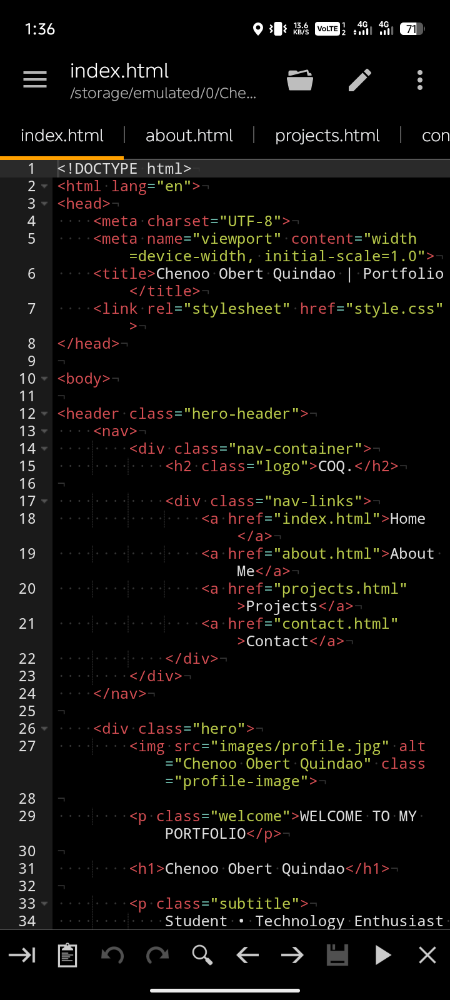
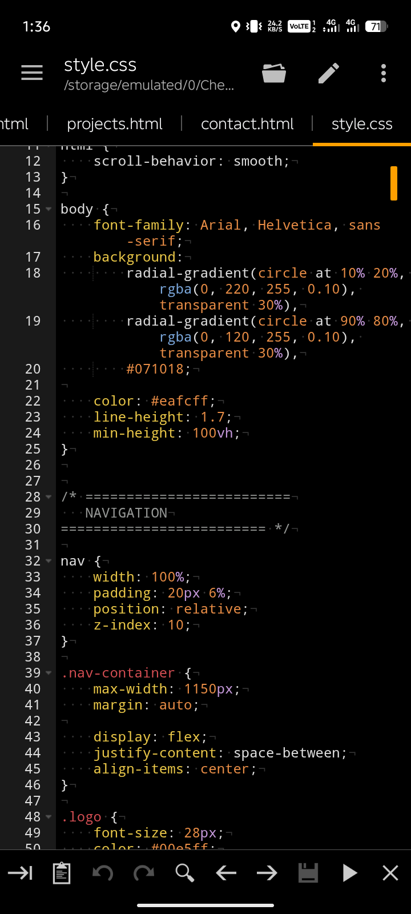
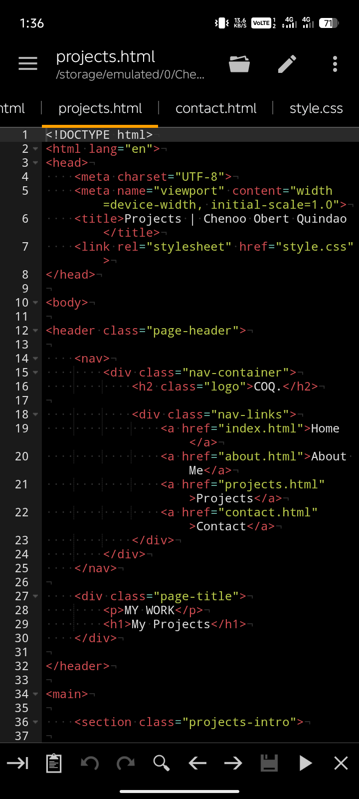

PROJECT 01
Personal Website
A personal website created using HTML and CSS. It contains personal information, navigation, images, and different sections.
HTML • CSS
MY WORK
Below are three sample projects that represent the knowledge and skills I have developed as a student.

A personal website created using HTML and CSS. It contains personal information, navigation, images, and different sections.
HTML • CSS

A simple web design project created to practice webpage layout, formatting, colors, links, and organization.
HTML • CSS • Design

A school activity that allowed me to apply what I learned about HTML elements, multimedia, links, and webpage structure.
HTML • Multimedia
This video demonstrates or represents one of my school projects or activities.